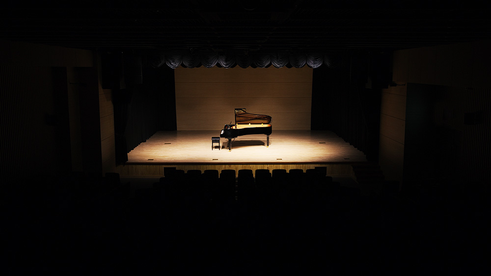
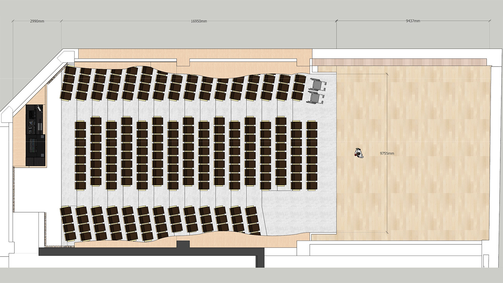

공연장
클래식부터 뮤지컬·컨퍼런스까지. 방문 전에 객석과 무대를 위치별로 확인하고, 도면과 장비 목록을 내려받으세요.
220석객석
9.7m무대 폭 (도면 9,755mm)
9.4m무대 깊이 (도면 9,437mm)
4.1m무대 높이 (도면 4,100mm)

사진360° 준비 중
사진은 실제 촬영본입니다. 촬영 위치 표시는 시안용 추정이며, 정확한 제원은 도면을 기준으로 합니다.
02
제원과 자료
제원과 자료
무대 제원
- 객석
- 220석 (휠체어석 도면 표기 2석)
- 무대 폭
- 9,755mm
- 무대 깊이
- 9,437mm
- 무대 높이
- 4,100mm
- 무대 단
- 600mm
현재 홈페이지 도면 이미지에 표기된 값입니다. 공개 전 실측·원본 도면으로 확인이 필요합니다.
음향
같은 연주, 다른 울림
Müller-BBM의 음장가변 시스템 VICELLO 설치(2019). OFF와 실제 프리셋을 같은 음원의 현장 녹음으로 비교해 들을 수 있게 준비하고 있습니다.
대관
이 공간에서 공연을 준비하신다면
희망일을 남겨 주시면 담당자가 가능 여부를 확인해 연락드립니다.